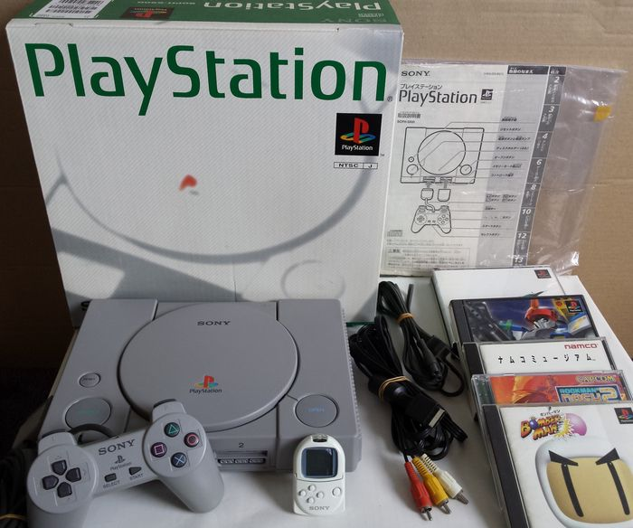

<
Se trató de una máquina potente, que supo usar muy bien el soporte en CD,
y se basó en el proyecto conjunto con Nintendo para dotar a la Super Nintendo
de soporte de CD. Nada más salir al mercado, debido a la expectación que creó
previamente, superó en ventas a la competencia y acaparó un sinfín de juegos
muy variados. Cambió el mercado completamente, ya que se centró en la venta
masiva de máquinas (gracias en parte a que era muy fácil de piratear). Eso
provocó que, a pesar de tener muy buenos títulos, abundaran muchos juegos mediocres.
La época dorada de los 16 bits, donde hubo una bonita lucha entre los 2 eternos
rivales (Nintendo y Sega), dio paso a la de 32 bits con un monopolio de
Sony en un panorama realmente aburrido y con una gran falta de originalidad.
Caben destacar grandes juegos como Crash Bandicoot, Medievil, Metal Gear Solid,
Tomb Raider, Gran Turismo, etc.
>
